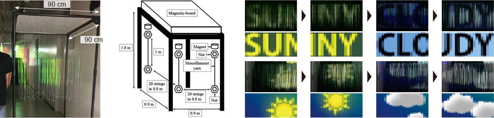

|
Atsushi Shiraki, Masataka Ikeda, Hirotaka Nakayama, Ryuji Hirayama, Takashi Kakue, Tomoyoshi Shimobaba, and Tomoyoshi Ito, Applied Optics 57(1), A33–A38 (2018) [Paper link]. |
|  |
|
In this study, we describe the fabrication of a high-resolution directional volumetric display that can display multiple images in different directions. The display designs can be used to show animations using strings; however, improving the resolution of such displays is difficult. Previously, the arrangement of strings has only been determined experimentally, making fabrication of volumetric displays a challenge. The goal of the present study is to improve resolution using simulations and to determine the arrangement of strings under three constraints. This simplified the fabrication of a directional volumetric display with 345 strings, which can display two different 20×20 pixel images in two different directions. A large high-resolution directional volumetric display can be fabricated using the proposed method. The string-type display has high artistic potential and is expected to find applications in the amusement and entertainment fields. |